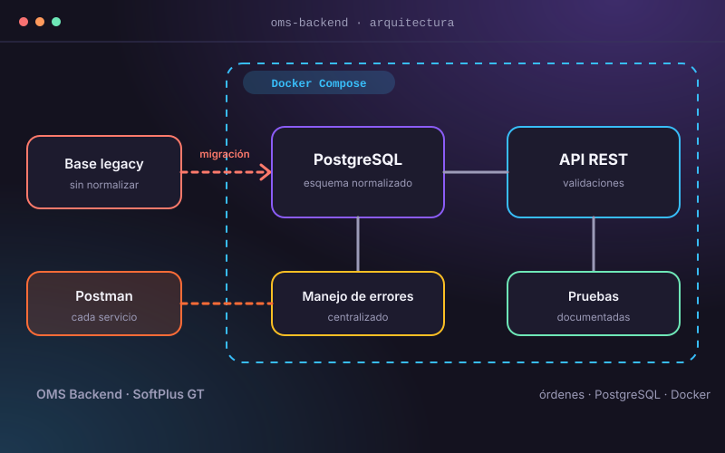

PostgreSQLDocker ComposePostmanEn desarrollo
OMS Backend — SoftPlus GT
Desarrolladora backend en el equipo de SoftPlus GT. Migré una base de datos legacy a un esquema PostgreSQL con normalización, validaciones y manejo centralizado de errores; configuré el entorno reproducible con Docker Compose y documenté las pruebas de cada servicio en Postman.
Repositorio privado